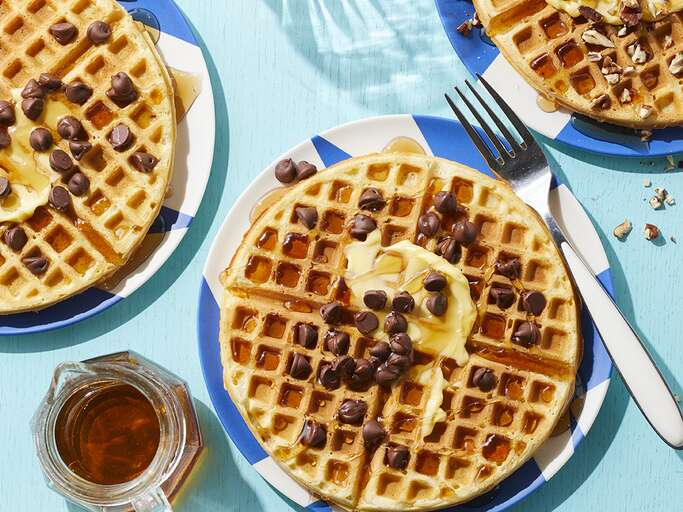

Waffle
Home

Waffles are a delicious breakfast treat made from a batter that is cooked between two hot plates, creating a crispy exterior and a soft, fluffy interior.
They are often served with syrup, whipped cream, fresh fruit, or even ice cream.
Waffles can be enjoyed plain or topped with various ingredients, making them a versatile dish for any meal of the day.
There are many types of waffles, including Belgian waffles, which are thicker and have deeper pockets for holding toppings, and American waffles, which are thinner and denser.
Some waffles are even made with yeast, giving them a unique flavor and texture.
Waffles can be sweet or savory, and they are often enjoyed at breakfast or brunch, but they can also be served as a dessert or snack.
Ingredients
- 2 cups all-purpose flour
- 2 tablespoons sugar
- 1 tablespoon baking powder
- 1/2 teaspoon salt
- 2 large eggs
- 1 3/4 cups milk
- 1/2 cup vegetable oil or melted butter
- 1 teaspoon vanilla extract (optional)
- Cooking spray or additional oil for the waffle iron
Steps
- Preheat your waffle iron according to the manufacturer's instructions.
- In a large bowl, whisk together the flour, sugar, baking powder, and salt.
- In another bowl, beat the eggs and then add the milk, vegetable oil (or melted butter), and vanilla extract. Mix well.
- Pour the wet ingredients into the dry ingredients and stir until just combined. Do not overmix; a few lumps are okay.
- Lightly grease the waffle iron with cooking spray or oil.
- Pour the batter onto the preheated waffle iron, using enough to cover the surface but not overflow.
- Close the waffle iron and cook according to the manufacturer's instructions, usually for about 3-5 minutes, until golden brown.
- Carefully remove the waffle and repeat with the remaining batter.
- Serve warm with your favorite toppings, such as syrup, whipped cream, fresh fruit, or nuts.
- Enjoy your delicious homemade waffles!